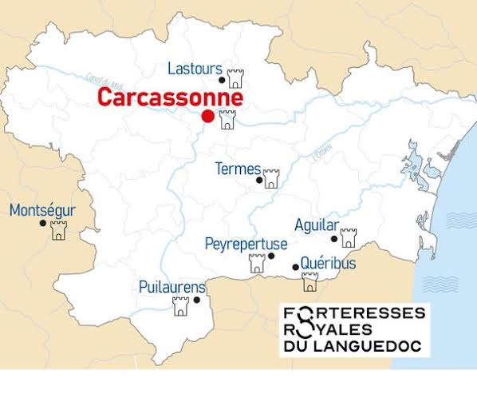

Forteresses
Royales
du Languedoc


⟹ Patrimoine mondial UNESCO · Huit sites ⟸
Un système né de la croisade contre les Albigeois (1209-1229). Au début du XIIIe siècle, l'appel du pape Innocent III à la croisade contre l'hérésie cathare bouleverse le Languedoc. Menée par Simon de Montfort, l'armée croisée s'empare successivement de Béziers, Carcassonne, puis des grandes places fortes de la vicomté Trencavel et des seigneuries voisines : Termes en 1210, Minerve la même année. Chacune des huit forteresses aujourd'hui inscrites à l'UNESCO porte la trace de cet épisode fondateur, soit comme théâtre direct des combats, soit comme refuge de la résistance méridionale et cathare qui lui succède.

1229 : le traité de Meaux-Paris et l'annexion du Languedoc. Vaincu, le comte Raymond VII de Toulouse doit signer en 1229 le traité de Meaux-Paris, qui place une grande partie du Languedoc sous l'influence croissante de la Couronne de France. Ce traité ne règle pas immédiatement le sort des places fortes des Corbières, où d'anciens seigneurs dépossédés, devenus faidits, continuent la lutte pendant encore une génération.
1240-1244 : la dernière résistance méridionale et cathare. La révolte des faidits menée par Raymond Trencavel échoue devant Carcassonne en 1240, précipitant la soumission de Peyrepertuse et d'Aguilar. Quatre ans plus tard, en mars 1244, la chute de Montségur — où plus de deux cents « parfaits » cathares sont brûlés au pied du pog après un siège de plusieurs mois — marque la fin de la résistance cathare organisée en Languedoc, même si Quéribus, dernier refuge de dignitaires cathares en fuite, ne se rend qu'en 1255.
La sénéchaussée de Carcassonne, cheville administrative du dispositif. Au fur et à mesure des conquêtes, la Couronne installe à Carcassonne un sénéchal royal chargé d'administrer les territoires nouvellement rattachés. Selon la description officielle de l'UNESCO, ces huit forteresses constituent « l'épine dorsale » de cette sénéchaussée nouvellement créée, affirmant l'autorité du sénéchal sur d'anciens territoires jusque-là tenus par des lignages féodaux indépendants. Le réseau n'est donc pas seulement militaire : il est aussi l'outil d'une administration royale naissante, avec ses garnisons, ses châtelains et ses fonctions judiciaires et fiscales.
Un chantier royal étalé sur plus d'un siècle (1226-XIVe s.). De la croisade royale de Louis VIII en 1226 jusqu'au règne de Philippe le Bel, les ingénieurs capétiens reconstruisent ou transforment profondément la plupart de ces sites : double enceinte et château comtal remaniés à Carcassonne, donjon Saint-Georges ajouté au sommet de Peyrepertuse, enceintes extérieures d'Aguilar et de Termes, châteaux de Lastours rebâtis sur l'emplacement des anciens repaires féodaux détruits. Paradoxe qui nourrit encore le débat patrimonial : la plupart des murailles aujourd'hui visibles ne datent donc pas de l'époque cathare elle-même, mais de la reconquête royale qui lui succède.
1258 : le traité de Corbeil fixe la frontière avec l'Aragon. Le traité de Corbeil, signé en 1258 entre Louis IX et Jacques Ier d'Aragon, dessine durablement la frontière sud du royaume de France le long des crêtes des Corbières et des Pyrénées audoises. Désormais, la fonction principale du réseau bascule : de dispositif de pacification intérieure, il devient une ligne de sentinelles tournées vers le royaume d'Aragon, distant de seulement quelques dizaines de kilomètres à vol d'oiseau de Quéribus ou Peyrepertuse.
Les « cinq fils de Carcassonne », noyau resserré d'un ensemble plus vaste. L'expression « cinq fils de Carcassonne », apparue dans l'historiographie moderne, désigne traditionnellement cinq forteresses frontalières placées sous l'autorité du sénéchal de Carcassonne : Aguilar, Peyrepertuse, Quéribus, Termes et Puilaurens. Le bien inscrit par l'UNESCO en 2026 reprend ce noyau mais l'élargit à trois sites supplémentaires essentiels à la compréhension du système : Carcassonne elle-même, siège du pouvoir administratif ; les châteaux de Lastours, verrou nord vers la Montagne Noire ; et Montségur, en Ariège, qui incarne la mémoire cathare à l'origine de toute l'entreprise royale.
Un double objectif : surveiller la frontière et encadrer la population. Comme le résument les commentateurs de l'inscription, ces forteresses répondaient à un double objectif pour le roi de France : garder un œil sur une population locale encore perçue comme dissidente après des décennies de résistance et de catharisme, et surveiller le royaume d'Aragon voisin. Leur puissance est d'abord dissuasive plus que combative : à quelques exceptions près, la plupart de ces châteaux, une fois passés sous contrôle royal, ne connaîtront plus jamais de siège.
1659 : le traité des Pyrénées met fin à la fonction stratégique. Le rattachement du Roussillon à la France par le traité des Pyrénées repousse la frontière loin au sud, jusqu'aux Pyrénées elles-mêmes. Le réseau de sentinelles des Corbières perd alors d'un coup sa raison d'être. Certains sites, comme Termes, sont volontairement démantelés par la Couronne en 1653-1654 pour éviter qu'ils ne servent de refuge à des bandes armées ; les autres sont simplement abandonnés à l'érosion et au temps.
Du XVIIIe au XXe siècle : ruine, romantisme et sauvegarde. Livrées à elles-mêmes, ces forteresses se dégradent pendant près de deux siècles, leurs pierres parfois récupérées par les villages voisins. Le XIXe siècle, porté par le goût romantique pour les ruines médiévales et l'action de pionniers comme Prosper Mérimée à Carcassonne, amorce leur redécouverte patrimoniale. Les classements au titre des monuments historiques s'échelonnent ensuite sur près d'un siècle — de 1862 pour Carcassonne à 1949 pour Aguilar —, accompagnés à partir du XXe siècle de campagnes de fouilles archéologiques qui affinent la compréhension de chaque site.
La construction du mythe du « Pays cathare » (XXe siècle). Après la Seconde Guerre mondiale, l'essor du tourisme régional popularise l'appellation de « châteaux cathares », mettant l'accent sur la mémoire de la croisade albigeoise plutôt que sur la reconquête capétienne qui a pourtant façonné l'essentiel de l'architecture visible aujourd'hui. Cette dénomination, entrée dans le langage courant et largement utilisée par les offices de tourisme, sera précisément au cœur des débats entourant le nom retenu par l'UNESCO en 2026.
2025-2026 : une candidature de longue haleine. Le dossier de candidature, déposé sous l'intitulé savant de « système de forteresses de la sénéchaussée de Carcassonne (XIIIe-XIVe siècles) », est examiné par le Comité du patrimoine mondial lors de sa 48e session. La décision, très attendue dans les deux départements concernés, est annoncée le dimanche 26 juillet 2026 : les huit sites rejoignent la Liste du patrimoine mondial sous le nom officiel de « Forteresses royales capétiennes du Languedoc ».
Avant la conquête capétienne. Les emplacements ne sont pas nés avec la monarchie française. Plusieurs sont d’anciens points de pouvoir seigneuriaux installés sur des reliefs naturellement défensifs. Peyrepertuse est attesté dans les sources dès 1020, tandis que Quéribus apparaît également au début du XIe siècle. À Lastours, l’archéologie révèle une occupation bien plus ancienne encore, avec une sépulture de l’âge du Bronze découverte en contrebas des châteaux.
1209-1229 — la croisade des Albigeois. La croisade bouleverse l’équilibre politique du Midi. Les vicomtés et seigneuries favorables à Raymond-Roger Trencavel puis à ses successeurs passent progressivement sous contrôle capétien. Les forteresses ne sont cependant pas toutes prises de la même manière ni au même moment : certaines connaissent les combats, d’autres servent surtout de refuges ou de points d’appui.
1229-1244 — résistance, faidits et refuges. Le traité de Meaux-Paris renforce l’emprise de la Couronne. Des seigneurs dépossédés, les faidits, poursuivent néanmoins la lutte. Montségur devient le principal foyer de la résistance cathare organisée et tombe en mars 1244. D’autres places, notamment Quéribus et Puilaurens, restent liées à cette période de résistance et de refuge.
1255-1260 — le grand programme royal. Louis IX réorganise la défense méridionale. Les anciens sites sont reconstruits, agrandis ou profondément adaptés. À Puilaurens, une reconstruction royale est ordonnée en 1255 ; à Quéribus, la prise de contrôle royale est suivie d’une restructuration de la place. Le principe est désormais celui d’un réseau homogène placé sous l’autorité de la sénéchaussée de Carcassonne.
1258 — le traité de Corbeil. La frontière entre les royaumes de France et d’Aragon est stabilisée. Les forteresses des Corbières changent alors de fonction : elles deviennent des postes avancés, des points de guet et des marqueurs territoriaux de la frontière méridionale.
XIIIe-XIVe siècles — fonctionnement du réseau. Les châteaux accueillent des châtelains, des sergents, des guetteurs, des chapelains et des personnels chargés de l’entretien. Les effectifs restent généralement modestes au regard de l’ampleur monumentale des ouvrages. La force du dispositif tient à la combinaison de la topographie, de la visibilité réciproque de certains sites et de l’organisation administrative royale.
XVe-XVIe siècles — adaptation aux armes à feu. Les progrès de l’artillerie imposent des transformations. À Quéribus, les enceintes sont adaptées aux armes à feu et certaines parties sont renforcées. Puilaurens connaît également des travaux de modernisation. La fonction de surveillance de la frontière demeure, mais les anciennes architectures doivent désormais composer avec le canon.
1659 — traité des Pyrénées. Le rattachement du Roussillon à la France repousse la frontière bien au-delà des Corbières. Le système perd sa fonction stratégique principale. Certaines forteresses sont démantelées ou désarmées ; d’autres conservent seulement une petite présence militaire avant leur abandon.
XIXe-XXe siècles — naissance du patrimoine. Les ruines deviennent progressivement des monuments historiques. Carcassonne connaît une restauration majeure au XIXe siècle sous la direction de Viollet-le-Duc. Les autres sites font l’objet de recherches archéologiques, de restaurations et de mesures de protection.
1997-2026 — de Carcassonne aux huit forteresses. Carcassonne est inscrite individuellement au patrimoine mondial en 1997. Une démarche collective aboutit ensuite à l’inscription du système de huit sites en 2026, reconnaissant non seulement les monuments mais aussi leur cohérence territoriale et architecturale.
Un nom officiel qui tourne la page des « châteaux cathares ». Le bien inscrit porte le nom officiel de « Forteresses royales capétiennes du Languedoc », et non plus celui de « châteaux cathares » sous lequel ces sites étaient connus du grand public. Ce choix, assumé par le dossier de candidature, met l'accent sur la fonction de conquête et de consolidation royale plutôt que sur la mémoire cathare. Il n'a pas fait l'unanimité localement : sur le terrain, plusieurs guides et acteurs du tourisme ont exprimé leur trouble face à l'effacement du mot « cathare », jugé porteur d'une identité régionale forte, même si historiquement une grande partie de l'architecture visible date bien de l'après-croisade.
Le critère (iv) : un témoignage exceptionnel d'un système défensif. L'inscription repose sur le critère culturel (iv), qui reconnaît un ensemble architectural illustrant une période significative de l'histoire humaine. Le Comité du patrimoine mondial retient ici la valeur de ces huit sites comme témoignage exceptionnel de la consolidation politique, militaire et territoriale de la Couronne capétienne en Languedoc aux XIIIe et XIVe siècles, à travers une architecture aussi monumentale qu'adaptée à une topographie spectaculaire.
Un bien en série de 78,35 hectares. Le bien inscrit couvre au total 78,35 hectares répartis sur les huit sites, entourés d'une zone tampon de 9 405 hectares destinée à protéger leurs abords et leur environnement paysager. Il s'agit d'un « bien en série » : chaque forteresse conserve son identité propre, mais c'est leur cohérence d'ensemble, en tant que réseau défensif structuré, qui justifie l'inscription — aucun des huit sites n'aurait probablement obtenu seul cette reconnaissance.
Carcassonne, une double distinction. Élément phare de l'ensemble et siège historique de la sénéchaussée, le château comtal et les remparts de la Cité de Carcassonne bénéficient désormais d'une double reconnaissance : leur inscription individuelle de 1997 au titre de « ville historique fortifiée » demeure valable, tandis qu'ils intègrent en 2026 ce nouveau bien en série aux côtés de leurs sept partenaires. Carcassonne est ainsi le seul des huit sites à cumuler deux inscriptions distinctes sur la Liste du patrimoine mondial.
Une annonce partagée avec les plages du Débarquement. L'inscription des Forteresses royales du Languedoc a été annoncée le même jour, dimanche 26 juillet 2026, que celle des plages du Débarquement de Normandie, lors de la 48e session du Comité du patrimoine mondial. Avec ces deux nouveaux biens, la France compte désormais 56 sites inscrits sur la Liste du patrimoine mondial de l'UNESCO.
Documentation complémentaire
Sources de référence : fiche UNESCO du bien · site officiel des Forteresses royales du LanguedocUn modèle royal homogène. L’un des intérêts majeurs du bien UNESCO réside dans la parenté architecturale des huit sites. Les maîtres d’œuvre capétiens appliquent au Languedoc des principes de fortification développés dans le nord du royaume : enceintes régulières, tours flanquantes, archères, châtelets d’entrée, chemins de ronde et tours maîtresses. Le programme est suffisamment cohérent pour donner aux forteresses une véritable unité visuelle.
Mais le modèle doit s’adapter à la montagne. Les architectes ne peuvent pas reproduire mécaniquement les forteresses de plaine. À Peyrepertuse, les murailles épousent une longue crête calcaire ; à Puilaurens, l’accès est contraint par une succession de rampes et de chicanes ; à Montségur, la forteresse s’installe au sommet d’un piton à 1 207 m ; à Lastours, quatre châteaux distincts exploitent plusieurs promontoires d’une même crête.
La défense en profondeur. Les enceintes successives obligent l’assaillant à franchir plusieurs obstacles avant d’atteindre le cœur de la place. Les portes sont souvent protégées par des chicanes, des barbacanes ou des dispositifs permettant des tirs croisés. Les reliefs eux-mêmes jouent le rôle d’un rempart naturel : falaises, ravins, pentes abruptes et éperons réduisent les possibilités d’approche.
Le tir et la surveillance. Les archères, meurtrières, hourds et chemins de ronde permettent de battre les abords. La hauteur offre également un avantage essentiel : voir venir. Les positions dominantes permettent de contrôler les vallées, les cols et les passages. Cette fonction de vigie explique le choix de sites parfois difficiles d’accès mais extraordinairement visibles dans le paysage.
Une architecture de démonstration. Les forteresses ne servent pas uniquement à combattre. Leur taille, leur position et leur silhouette manifestent la présence du roi dans un territoire récemment intégré à la Couronne. L’architecture devient ainsi un langage politique : construire haut, fort et durablement revient à rendre visible l’autorité capétienne.
D'ouest en est, le réseau s'étend de la Montagne Noire aux confins de l'Ariège et du Roussillon, en passant par le cœur des Corbières. Les huit sites disposent désormais chacun d'une fiche dédiée sur ce guide.
Les données géographiques publiées par l’UNESCO indiquent : Carcassonne 7,93 ha, Aguilar 5,83 ha, Lastours 14,68 ha, Montségur 21,23 ha, Peyrepertuse 2,22 ha, Quéribus 0,89 ha, Puilaurens 4,44 ha et Termes 21,13 ha. La superficie totale du bien est de 78,35 ha, à laquelle s’ajoute une vaste zone tampon de 9 405 ha.
Une chaîne de vigilance face à l'Aragon. Après le traité de Corbeil de 1258, la fonction première du réseau devient la surveillance de la frontière franco-aragonaise. Postées sur des crêtes qui s'observent parfois à vue d'œil les unes les autres, les forteresses forment une ligne de guet capable de relayer l'alerte en cas de mouvement suspect venu du sud, tout en marquant physiquement, dans le paysage, la limite du royaume de France.
Un outil d'administration autant qu'un outil militaire. Chaque château abrite un châtelain royal, responsable devant le sénéchal de Carcassonne, chargé de la garnison mais aussi de fonctions judiciaires, fiscales et notariales locales. Le réseau sert ainsi à faire vivre concrètement l'autorité capétienne au quotidien, bien au-delà du seul temps de guerre — une administration de la frontière plus qu'une simple ligne de combat.
Un instrument de pacification intérieure. Le second objectif, tout aussi important que la surveillance extérieure, est de garder un œil sur une population locale encore marquée par des décennies de résistance seigneuriale et de catharisme. La présence militaire et administrative dissuade toute tentative de reconquête par les anciens lignages féodaux, comme celle tentée par les faidits en 1240.
Une démonstration de puissance architecturale. Au-delà de leur fonction strictement défensive, ces forteresses sont conçues pour impressionner : donjons polygonaux, doubles enceintes, escaliers taillés dans le roc à Peyrepertuse, chapelles seigneuriales. Cette architecture ostentatoire, adaptée à des sites naturellement vertigineux, affiche la puissance et la légitimité de la Couronne fraîchement installée sur un territoire tout juste conquis.
Des garnisons réduites, un rôle surtout dissuasif. Contrairement à l'image de forteresses en état de siège permanent, la plupart de ces châteaux n'abritent, une fois passés sous contrôle royal, que de petites garnisons de quelques dizaines d'hommes. Leur efficacité tient moins à leur capacité de résistance qu'à leur simple existence : verrouiller visuellement le territoire suffit à décourager toute incursion, rendant très rares les sièges postérieurs à la reconquête capétienne.
La fin d'une fonction avec le déplacement de la frontière. Cette utilité stratégique s'éteint d'un coup en 1659, lorsque le traité des Pyrénées repousse la frontière du royaume bien plus au sud. Sans ennemi à surveiller, les forteresses perdent leur rôle : certaines sont démantelées par précaution, d'autres simplement désarmées et abandonnées à l'entretien réduit, avant leur redécouverte patrimoniale des XIXe et XXe siècles.
Un patrimoine fragile. Les forteresses sont exposées à l’érosion naturelle, aux intempéries, aux effets du gel, au vent et à la fréquentation touristique. Leur conservation exige donc un entretien régulier des maçonneries, des cheminements et des abords.
Conserver ne signifie pas reconstruire partout. L’enjeu patrimonial consiste à préserver les vestiges authentiques tout en sécurisant les visiteurs et en rendant lisibles des architectures parfois très ruinées. Les interventions peuvent donc chercher à stabiliser les élévations, à protéger les parties fragiles et à expliquer les volumes disparus plutôt qu’à restituer systématiquement un état supposé complet.
L’archéologie change la lecture des monuments. Les fouilles ont permis de distinguer, sur plusieurs sites, les phases seigneuriales antérieures des constructions royales. Aguilar offre par exemple un contraste particulièrement lisible entre une enceinte intérieure liée au château primitif et une enceinte extérieure construite par les maîtres d’œuvre du roi à partir du dernier tiers du XIIIe siècle. À Termes, les vestiges des périodes seigneuriale et royale coexistent également.
Le paysage fait partie du patrimoine. L’UNESCO ne reconnaît pas seulement des murs. Le bien comprend les reliefs rocheux, les éperons, les lignes de crête et l’écrin paysager qui permettent de comprendre pourquoi les sites ont été choisis. Cette dimension explique l’importance de la zone tampon et de la préservation des panoramas.
Une histoire à raconter avec nuance. Les expressions « châteaux cathares » et « forteresses royales » ne désignent pas exactement la même réalité historique. Le souvenir cathare explique une partie de l’histoire des lieux, mais les constructions actuellement visibles sont pour l’essentiel liées aux programmes de fortification et de reconstruction capétiens des XIIIe et XIVe siècles. L’intérêt du classement UNESCO est précisément de replacer ces monuments dans l’histoire plus large de la conquête, de l’administration et de la défense du Languedoc.
Canal du Midi : l'autre grand site UNESCO de la région, inscrit depuis 1996, à parcourir à vélo ou en bateau entre Toulouse et la Méditerranée.
Château de Villerouge-Termenès : à quelques kilomètres de Termes, ce château n'appartient pas au bien UNESCO mais partage la même mémoire cathare — c'est ici que fut brûlé le dernier « parfait », Guilhem Bélibaste, en 1321.
Abbaye de Lagrasse : l'une des plus anciennes abbayes de France, au cœur des Corbières, accessible avec le pass 3 sites proposé autour de Termes.
Bastide Saint-Louis de Carcassonne : la ville basse fondée par Louis IX en 1247 pour reloger les habitants expulsés de la Cité, à découvrir en contrepoint de la forteresse médiévale.
Massif des Corbières et Montagne Noire : un réseau de sentiers de randonnée reliant plusieurs des sites entre garrigue, vignoble et forêt.